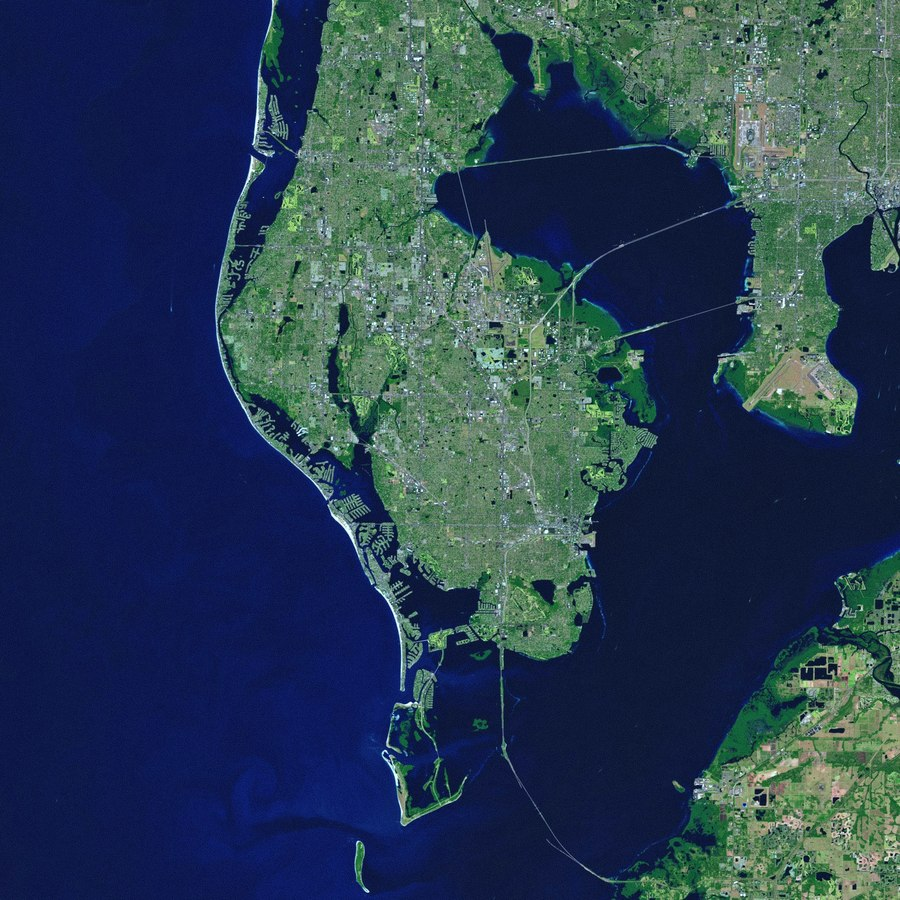
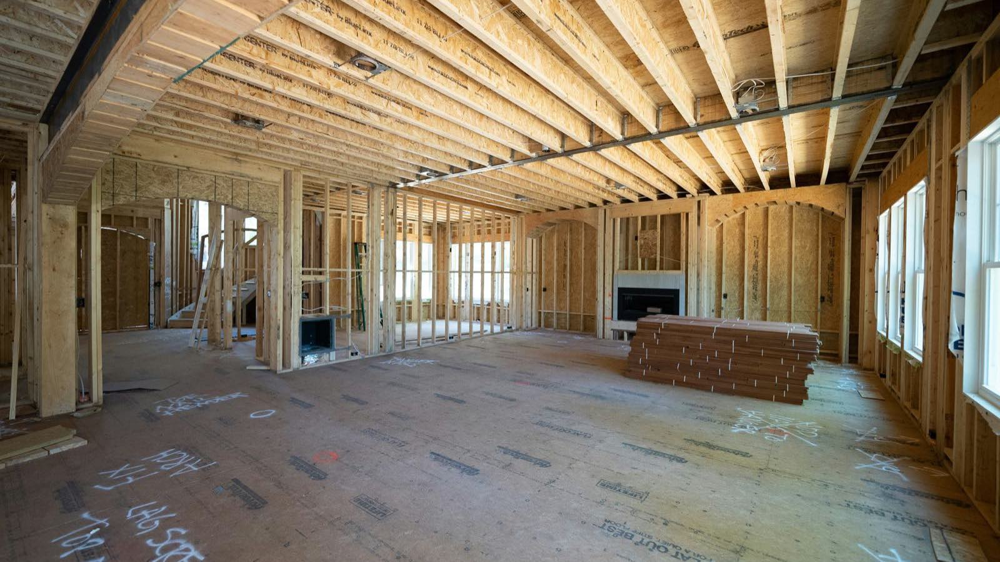
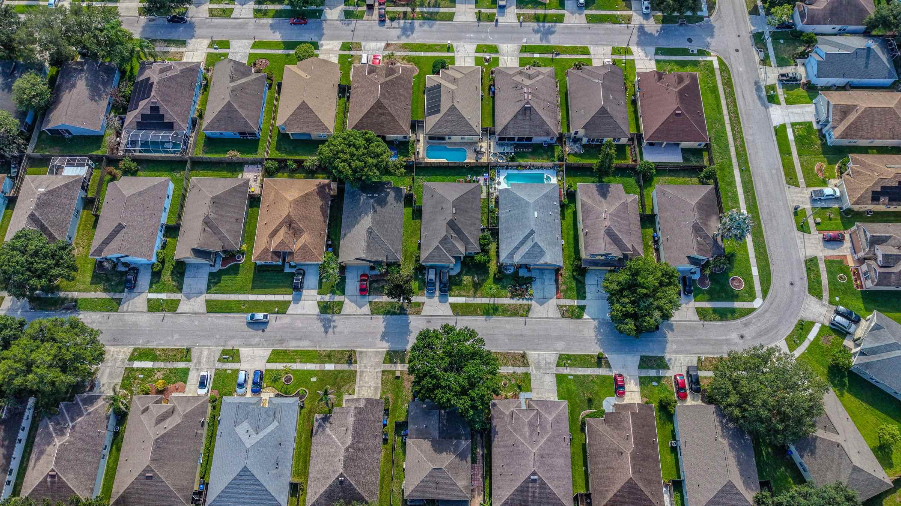
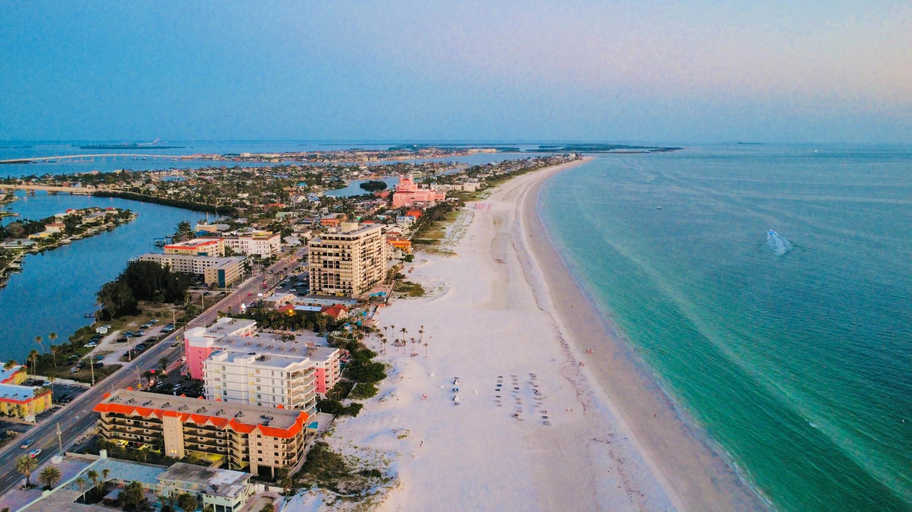

Writing
What I am seeing in the Pinellas County market, how flood and elevation are shaping value, and which improvements actually show up in a sale price.


UAD 3.6 retires the 1004 and its siblings on November 2, and it has been in broad production since January. It does not change how a home is valued. It does change how much documentation the report asks for, which matters in a county with thousands of post-storm rebuilds and a lot of thin permit files.

The ROAD to Housing Act became law in July, but its ban on large institutional investors buying single-family homes does not begin for another five months, and it never requires anyone to sell. What the statute says, what the selling data shows, and why Tampa — one of six metros holding a third of institutionally-owned homes — feels a national story locally.

Florida's reserve mandate, the federal Full Review requirement that landed August 3, and the 15 percent reserve floor coming in January 2027. What each rule says, what the sales data actually shows, and the documents to have in hand before a deal reaches underwriting.
The national trend list with the Florida filter applied, plus the Pinellas flood and permit rules that decide what is possible on your house before anyone picks a tile.
Same person, every platform. Reviews, market notes, and neighborhood questions answered.